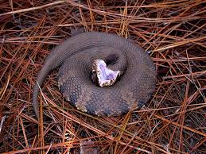

<!doctype html>
<html>
  <head>
    <meta charset="utf-8">
    <title>Image</title>
    <link rel="stylesheet" href="stylesheets/style.css">
  </head>
  <body>
    <script src="javascripts/lib/underscore-min.js"></script>
    <script src="javascripts/lib/jquery-1.10.2.min.js"></script>
    <script src="javascripts/lib/handlebars-1.0.0.js"></script>
    <script src="javascripts/lib/ember.js"></script>
    <script src="javascripts/lib/ember-data.js"></script>

    <script type="text/x-handlebars">
      <header>
        <h1>Image Testing</h1>
      </header>

      <section id="image-container">
        
      </section>
      <hr>

      <footer>
        <div id="copyright">
        &copy;2014 UNM Informatics
        </div>
        <div id="style-control">
        <button {{action save}}>save new snake</button>
        <button {{action load}}>load saved snake</button>
        <button {{action clear}}>clear saved snakes</button>
        </div>
      </footer>
    </script>

    <script>

    var converter = function() {

      var index = 1;
          imageData = [
            ['sidewinder', 'user_images/sidewinder.gif'],
            ['cottonmouth', 'user_images/cottonmouth.jpeg']
          ];

      return {

        getImageMetadata: function() {
          index = (index === 1) ? 0 : 1;
          return imageData[index];
        },

        getActiveImageMetadata: function() {
          return imageData[index];
        },

        imageToB64: function(key, url) {
          var canvas = document.createElement('CANVAS'),
            ctx = canvas.getContext('2d'),
            img = new Image();
          img.crossOrigin = 'Anonymous';
          img.onload = function(){
            var dataURL;
            canvas.height = img.naturalHeight;
            canvas.width = img.naturalWidth;
            ctx.drawImage(img, 0, 0);
            dataURL = canvas.toDataURL("image/png");
            console.log(dataURL);
            localStorage[key] = dataURL;
            canvas = null; 
          };
          img.src = url;
        }

      }

    }();

    window.StorageTests = Ember.Application.create({
        LOG_TRANSITIONS: true,
        LOG_TRANSITIONS_INTERNAL: true,
    });

    StorageTests.ApplicationController = Ember.ObjectController.extend({

        actions: {

          save: function() {
            var imageDatum = converter.getImageMetadata();
            converter.imageToB64(
              imageDatum[0], 
              imageDatum[1]
            );
          },

          load: function() {
            var imageDatum = converter.getActiveImageMetadata();
            var b64 = localStorage[imageDatum[0]];
            console.log(b64);
            Ember
              .$('#snake-img-tag')
              .attr('src', b64);
          },

          clear: function() { 
            localStorage.clear();
          }
        }

      });

    </script>
  </body>
 </html>